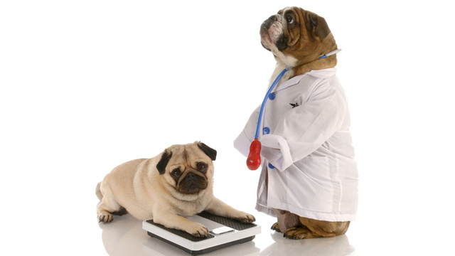

만약 당신의 반려견이 과체중이라면,
고통스런 관절염, 심장병, 호흡곤란, 당뇨,
심지어 방광암 등 모든 종류의 건강상 문제를 겪게 될 수 있습니다.
과체중과 그 결과 나타나는 건강상의 문제들로 인해
반려견은 활동하는 시간이 줄어들고 우울증에 시달릴 수 있습니다.
반려견이 과체중이라는 것을 어떻게 알 수 있을까요?
우선 정기검진에서 담당 수의사가 반려견의 체중을 측정하게 될 것입니다.
정기검진이 없는 기간에는 반려견의 옆구리에 손을 대어보세요.
혹시 반려견의 갈비뼈를 찾기가 어렵거나 전혀 손으로 만져지지가 않나요?
만약 그렇다면 당신의 반려견은 과체중일 가능성이 큽니다.
반려견의 체중을 관리해주세요!!